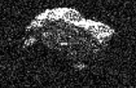

The CAD API
Shown above is a radar image of asteroid 2017 BQ6 compiled this year on 2/6-7 from NASA's Goldstone Deep Space Communications Complex in California. Images reveal an irregular, angular-appearing asteroid about 660 feet in size that rotates about once every three hours. Is this asteroid one that we could see with our own telescope? Let's find out with the NASA CAD API.
The first thing we want to do is prepare our GET request. The URL we will be using is:
https://api.nasa.gov/SSD-CNEOS/CAD?api_key=[#]
If you go to the NASA CAD API site, you will find two query examples:
If you know the asteroid designation (433 is the designation for asteroid 433 Eros,) the following request will get you all the close-approach data for an asteroid using the query defaults
(close-approaches less than .05 au (an astronomical unit is approx. equal to the average distance between the Earth and the Sun) in the next 60 days sorted by date):
https://api.nasa.gov/SSD-CNEOS/CAD?api_key=[#]&des=433
You can query by distance (dist-max= 10 LD -lunar distance is the average distance between the Earth and the Moon, so this will exclude objects greater than 10x this distance) and/or a date (date-min=2018-Jan-01-on or after this date) and get all the close-approach data sorted by distance:
https://api.nasa.gov/SSD-CNEOS/CAD?api_key=[#]&dist-max=10LD&date-min=2018-01-01&sort=dist
There isn't a lot of information on the NASA CAD API site. There is a link to the JPL SBDB Close-Approach Data API website. This is where one can find a listing and description of the parameters, as well as a data output section with sample output. The data output section is key, as it lets us know the output will be in JSON-format and it deciphers the data fields.
We want to be able to get a good look at any asteroids and comets so the parameters I have entered are:
- date-max=2017-03-31 (we want all dates between now and the end of March)
- dist: none (default is .05 au- this will exclude objects at greater distance than this)
- h: none (default- no restriction on absolute magnitude)
- v-inf: none (default- no restriction on velocity relative to a massless body (km/s))
- v-rel: none (default- no restriction on velocity relative to the approach body at close approach (km/s))
- class: none (default- no restriction on SBDB orbit class value (these are listed on the JPL CAD API page))
- kind: none (default no restriction on kinds of object)
- spk: none (default- only used when querying for specific SPK-ID (SPICE ephemeris subsystem ID))
- des: none (default - only used when querying for specific object)
- body: Earth (default - one can also allow, Moon, Pluto,other planets or all bodies w/ ALL or *)
- sort=date (sort results by date (one can also sort by dist, dist-min, v-inf, h or object)
- limit: none (default- otherwise limit data to first N results)
- ?api_key='my API key'
https://api.nasa.gov/SSD-CNEOS/CAD?api_key=' + apiKey + '&date-max=2017-03-31&sort=date
Below is the JavaScript code used for the call to the API:
The code is similar to that for the call to the EPIC API. The differences are the URL and the code on lines 10-34 in the callback function.
This code creates a table to display our results. The elements are all created in JavaScript using document.createElement("element"); with the children elements all being appended to their parent, parentElement.appendChild(childElement); and the table element itself being
appended to an element already on the this document: <div id="table" >. We'll discuss how the cells of the table were filled shortly.
var apiKey = 'my API key';
var req = new XMLHttpRequest();
req.open('GET', 'https://api.nasa.gov/SSD-CNEOS/CAD?api_key=' + apiKey + '&date-max=2017-03-31&sort=date', true);
req.addEventListener('load',function(){
if(req.status >= 200 && req.status < 400){
var response = JSON.parse(req.responseText);
console.log(response);
console.log(req.responseText);
function buildTable(response) {
var table = document.createElement("table");
var fields = response.fields;
var headRow = document.createElement("tr");
fields.forEach(function(field) {
var headCell = document.createElement("th");
headCell.textContent = field;
headRow.appendChild(headCell);
});
table.appendChild(headRow);
response.data.forEach(function(object) {
var row = document.createElement("tr");
for (var i = 0; i < response.fields.length; i++) {
(function(j) {
var cell = document.createElement("td");
cell.textContent = [object[j]];
row.appendChild(cell);
})(i);
}
table.appendChild(row);
});
return table;
}
document.getElementById("table").appendChild(buildTable(response));
}
else {
document.write("Error in network request: " + req.statusText);
}});
req.send(null);
Below you can see the JSON data received from our GET request req.responseText:
And here the data has been parsed to a JavaScript object request.
If you refer back to the code to create the table, you can see that the <th> cells were filled with the values in the
response.fields array. The <td> cells were filled with the values held in the arrays of values in the response.data array (hence cell.textContent = [object[j]];).
Object count:"17" data:Array[17] 0:Array[11] 0:"2017 DU34" 1:"1" 2:"2457808.577352447" 3:"2017-Feb-24 01:51" 4:"0.0256651268239048" 5:"0.0256086404577222" 6:"0.0257216342003747" 7:"10.6464963102051" 8:"10.6367405467973" 9:"< 00:01" 10:"26.742" length:11 __proto__:Array[0] 1:Array[11] 2:Array[11] 3:Array[11] 4:Array[11] 5:Array[11] 6:Array[11] 7:Array[11] 8:Array[11] 9:Array[11] 10:Array[11] 11:Array[11] 12:Array[11] 13:Array[11] 14:Array[11] 15:Array[11] 16:Array[11] length:17 __proto__:Array[0] fields:Array[11] 0:"des" 1:"orbit_id" 2:"jd" 3:"cd" 4:"dist" 5:"dist_min" 6:"dist_max" 7:"v_rel" 8:"v_inf" 9:"t_sigma_f" 10:"h" length:11 __proto__:Array[0] signature:Object __proto__:Object
And here is the table created from the results:
Looks like there are 17 asteroids we can check out between now and the end of March, that will be within .05 au (or 1/20th) of the distance between Earth and the Sun. Asteroid 2017 BQ6 isn't one of them, 'though we could always change our query to get the close-approach data by des and find out when it is expected. There are a lot of numbers, but basically we are interested in the name (des,) the date of closest approach (cd,) and the nominal distance in au (dist--along w/ dist_min and dist_max.) With this information in hand, we can plan our "star-asteroid-comet-gazing!"
However, I just found out about an asteroid that passed between the Earth and the Moon on 2/2/2017, Groundhog Day. I don't think Punxsutawney Phil saw his shadow this year...I think he was freaked out by the asteroid! Let's check out another NASA API that will let us know if we need to worry about any of these asteroids.